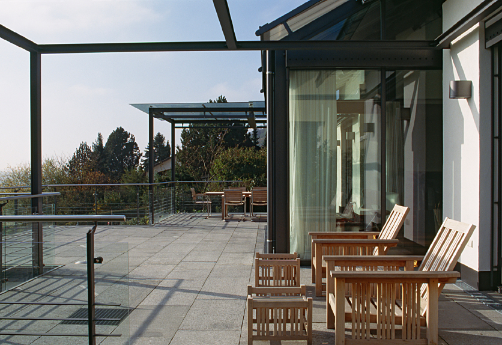

Hoe herken je welk glas je hebt?
Met de afstandhouder en een eenvoudige reflectietest kom je vaak een heel eind.

Welk glas zit er eigenlijk in jouw raam?
Je wilt weten of glas vervangen zinvol is, maar op de ruit staat geen groot etiket met "ouderwets dubbelglas". Gelukkig kunnen wij, en kun jij zelf, vaak prima vaststellen hoeveel glasbladen er zijn en of er waarschijnlijk een warmte-reflecterende coating aanwezig is. Voor de exacte isolatiewaarde blijft documentatie of een professionele controle nodig, maar met de stappen hieronder kom je al een heel eind.
Begin bij de documentatie die je al hebt
De betrouwbaarste informatie staat meestal gewoon al ergens in huis: in de aankoopbrochure, een bouwkundig rapport, facturen, garantiepapieren of opleverdocumenten. Zoek naar termen als HR, HR+, HR++, HR+++, Ug-waarde, glasopbouw of een productcode. Is het glas relatief recent geplaatst, dan heeft de oorspronkelijke glaszetter de gegevens vaak ook nog in de administratie staan.
Bekijk de afstandhouder tussen de glasplaten
Vind je niets terug op papier, kijk dan langs de rand van het glas. Bij dubbel en triple glas zie je daar meestal een metalen of donkere afstandhouder. Daarop kunnen de fabrikant, productiedatum, glasopbouw, normmarkering of productcode staan. Soms staat de isolatieklasse letterlijk vermeld, maar vaak moet de code eerst worden opgezocht. Maak een scherpe foto met je telefoon van die rand en noteer alle tekens die je ziet, ook als ze je niets zeggen.
Kom je bijvoorbeeld de code 4-16-4 tegen? Dat beschrijft meestal twee glasbladen van 4 mm met daartussen een spouw van 16 mm. Die code alleen zegt overigens nog niet automatisch dat het om HR++ glas gaat: daarvoor zijn ook de coating, de gasvulling en de uiteindelijke Ug-waarde bepalend.
Tel de reflecties met de lampjestest
Wil je verder kijken dan de afstandhouder, dan werkt de lampjestest goed. Schijn in een donkere ruimte met de zaklamp van je telefoon schuin op het glas. Per glasblad zie je twee oppervlaktereflecties, en door de lamp iets te bewegen worden die reflecties vaak nog duidelijker. Zie je maar twee reflecties, dan heb je waarschijnlijk te maken met één glasblad, oftewel enkelglas. Tel je er vier, dan gaat het vermoedelijk om twee glasbladen: dubbel of HR-glas. En bij zes reflecties zit je waarschijnlijk met drie glasbladen, wat duidt op triple glas.
Let daarbij ook op de kleur van de reflecties. Heeft een van de reflecties een iets afwijkende tint, bijvoorbeeld blauwachtig, paars, groen of donkerrood? Dan zit er waarschijnlijk een coating op het glas, en dat wijst op HR-glas. De bekende "vlammetjestest" werkt volgens hetzelfde principe, maar wij raden altijd de telefoonlamp aan: die is een stuk veiliger dan een open vlam bij gordijnen, raamdecoratie of beschadigd glas.
Wat deze test je niet vertelt
Zo'n reflectietest is een prima eerste diagnose, maar geen laboratoriumrapport. Je kunt er de exacte Ug-waarde niet mee bepalen, en ook niet of de spouw nog volledig met het oorspronkelijke isolerende gas gevuld is of dat de randafdichting nog overal goed functioneert. Ook of het glas precies HR, HR+ of HR++ is wanneer de markering ontbreekt, blijft gissen, net als de vraag of er een veiligheids-, geluids- of zonwerende functie aanwezig is en of het glas destijds volgens het juiste systeem is geplaatst.
Het bouwjaar van de woning kun je wel gebruiken als eerste aanwijzing, maar niet als bewijs. Een huis kan later gedeeltelijk zijn verbouwd, waardoor in dezelfde gevel meerdere generaties glas naast elkaar zitten. Controleer daarom het liefst iedere ruit of ieder kozijn apart. Vooral uitbouwen, dakkapellen, deuren en badkamers wijken vaak af van de rest van de woning, en dat zien we in de praktijk ook regelmatig terug. Twijfel je of je bestaande kozijnen geschikt zijn voor nieuw HR++ of triple glas, dan is dat sowieso iets om samen met ons te bekijken.
Wanneer schakel je ons toch even in?
Er zijn een paar situaties waarin we je aanraden het gewoon aan ons voor te leggen. Zie je nergens een leesbare markering en blijft ook de reflectietest onduidelijk, dan help je jezelf sneller met een korte controle door ons dan met verder puzzelen. Hetzelfde geldt als je een subsidie wilt aanvragen en daarvoor aantoonbare product- en meldcodegegevens nodig hebt, of als je condens of lekkage tussen de glasbladen vermoedt. Heeft de ruit mogelijk een speciale coating, folie, geluidsfunctie of veiligheidsfunctie, dan is dat ook een moment om het niet op eigen houtje te laten zitten.
Begin dus bij de afstandhouder en gebruik daarna de lampjestest om het aantal glasbladen en een mogelijke coating te herkennen. Zie het resultaat als een goede eerste indruk, niet als eindoordeel. Voor een offerte, subsidieaanvraag of technische beslissing heb je uiteindelijk de volledige productgegevens en een beoordeling van het kozijn nodig, en daar denken we graag in mee.
Laat het glas gerust door ons bekijken
Stuur ons via het contactformulier een overzichtsfoto, een scherpe foto van de afstandhouder en een foto van de reflecties. Dan laten we je weten wat daarin al zichtbaar is en welke controle eventueel nog nodig is. Twijfel je na het lezen van dit artikel of vervangen al aan de orde is, kijk dan ook eens naar wanneer je oud dubbel glas beter kunt vervangen.